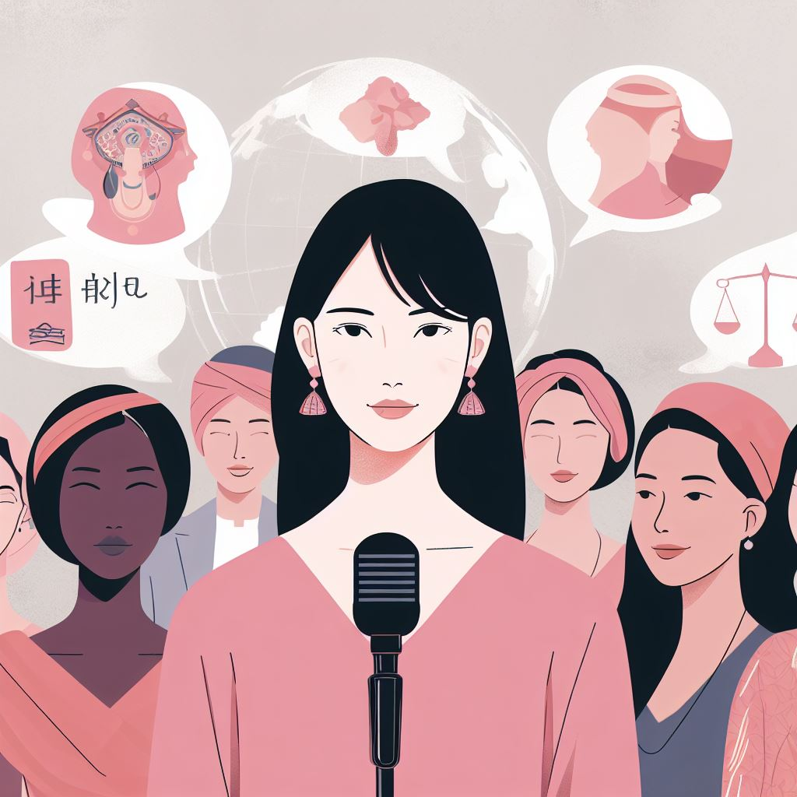
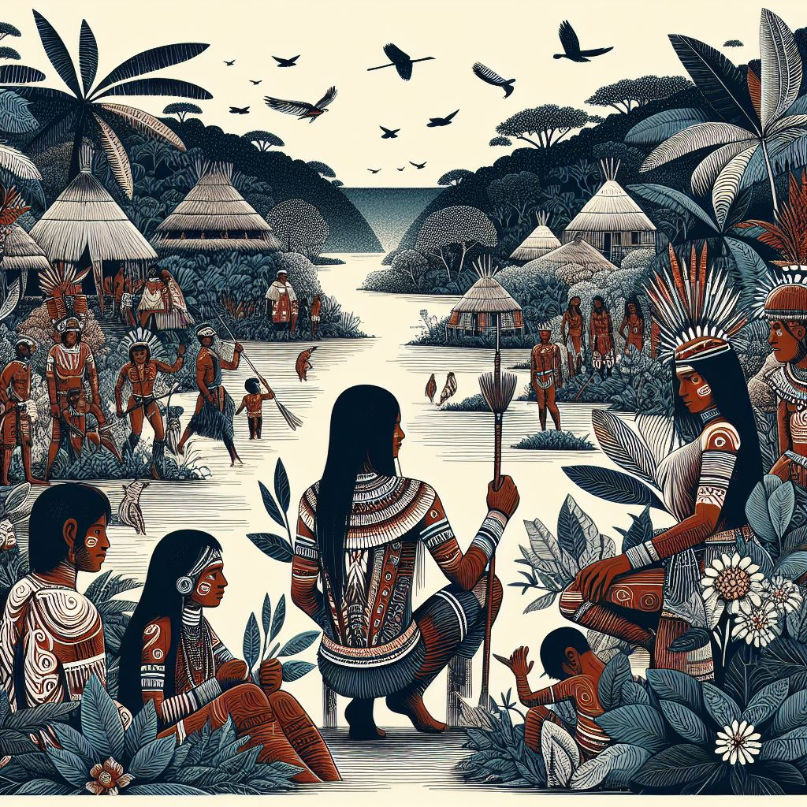
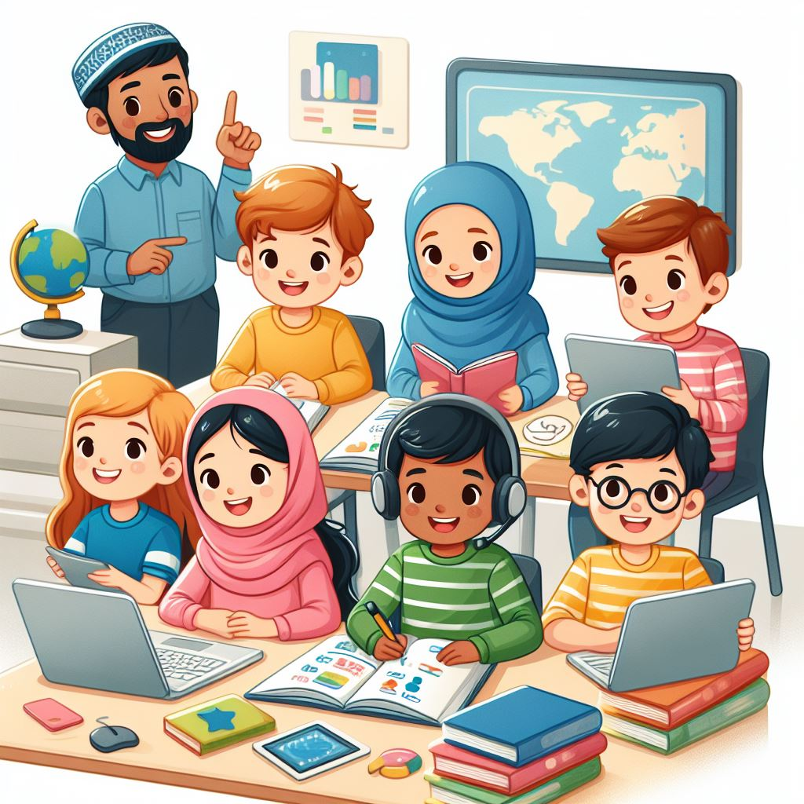

What are
Language Rights?
A Global Perspective

Language Rights
Language law is now considered a fundamental human right and is an area of law that refers to the recognition and protection of different languages in a society. It refers to people's rights to use their mother tongue or other languages on various occasions in life, including education, justice, public administration, media and culture. There are reasons why language rights are considered essential for humanity
Languages play a crucial role in transmitting a community's culture, traditions and values. Protecting language rights helps to preserve cultural diversity, preventing the loss of traditional languages and knowledge.
Recognizing and respecting language rights is essential to guaranteeing the inclusion of all people in society. This is especially important in contexts where there are different languages spoken, ensuring that all communities have equal access to opportunities and services.
The right to mother tongue education is crucial to guaranteeing effective and inclusive education. Studies show that mother tongue instruction can facilitate a deeper understanding of concepts, promote academic success and contribute to the development of communities.
Language rights are intrinsically linked to human rights. Denying people the right to use their language can be seen as a form of discrimination, going against the fundamental principles of equality and freedom.

Many languages are threatened with extinction, and language rights play a crucial role in preserving these languages and the traditional knowledge associated with them.
Language rights are fundamental to promoting cultural and linguistic diversity, as well as guaranteeing equal opportunities for all language communities in a society. Language rights vary from country to country and can be influenced by cultural, historical and legal factors specific to each region.